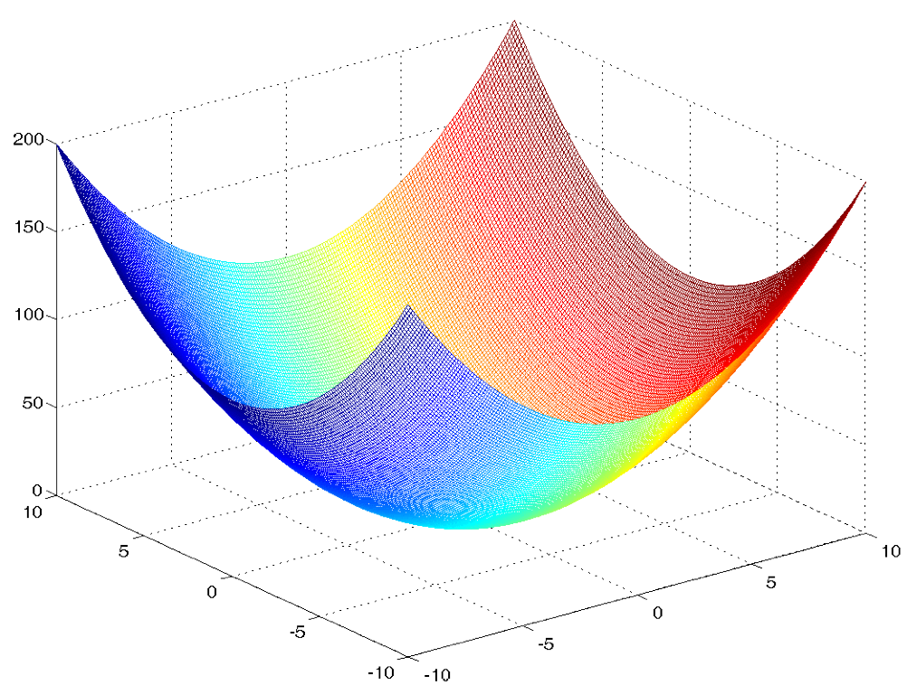

Introduccion
La parabola es una figura geometrica que ha sido objeto de estudio y aplicacion en diferentes areas de la ciencia y la tecnologia.
Su definicion, caracteristicas y aplicaciones son fundamentales para comprender su importancia en la fisica, la ingenieria y las matematicas.
Ademas, la parabola se encuentra en muchos lugares de la naturaleza y en la tecnologia, lo que la convierte en una figura muy versatil y util.
A lo largo de la historia, la parabola ha sido estudiada por muchos matematicos y cientificos, lo que ha permitido su utilizacion en diferentes
campos y situaciones.
En este articulo se exploraran las caracteristicas y aplicaciones de la parabola, asi como su historia y relevancia en el mundo actual.
¿Que es la Parabola?
La parabola es una curva geometrica que se forma al cortar un cono en un plano paralelo a su generatriz. Es una seccion conica y se caracteriza por tener un eje de simetria y un punto llamado foco. La parabola tiene numerosas aplicaciones en la geometria, la fisica y la ingenieria, y es utilizada en la construccion de distintos dispositivos y sistemas, como antenas, lentes y reflectores solares.
Propiedades de la Parabola
Todas las parabolas poseen las siguientes propiedades:
1. Una parabola se trata de una curva abierta, o dicho de otra forma, consiste en dos ramas sin puntos comunes que se prolongan ilimitadamente.
2. Toda parabola tiene un unico eje de simetria, donde esta situado el vertice de dicha parabola.
3. Una parabola de orientacion vertical es convexa cuando sus ramas van hacia arriba, por contra, la parabola es concava si sus ramas van hacia abajo.
4. La excentricidad de una parabola es equivalente a la unidad (1). La excentricidad es un coeficiente que en este caso se calcula dividiendo la distancia desde el foco hasta el centro de la parabola entre la distancia del vertice a la directriz (y ambas distancias siempre coinciden en su valor).
5. De la propiedad anterior, se deriva que todas las parabolas son semejantes o similares.
6. Una parabola no tiene ninguna asintota.

